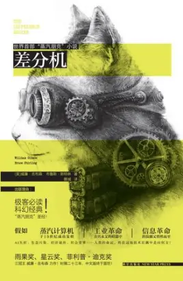
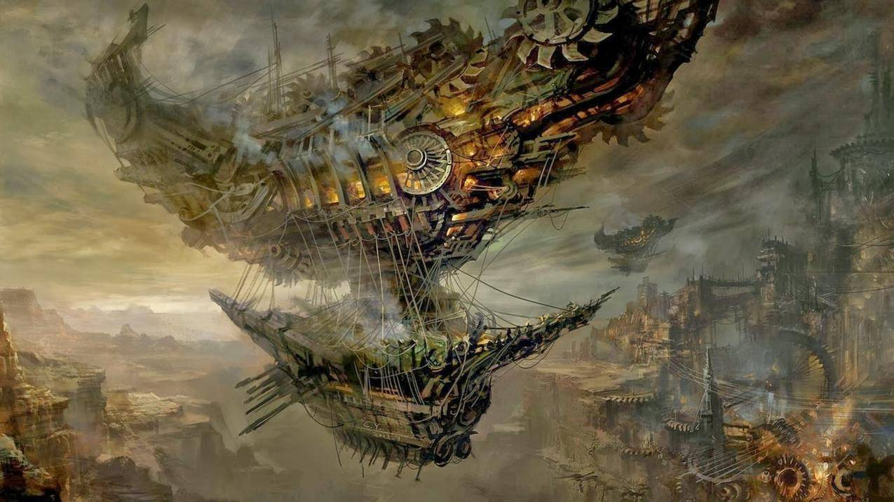
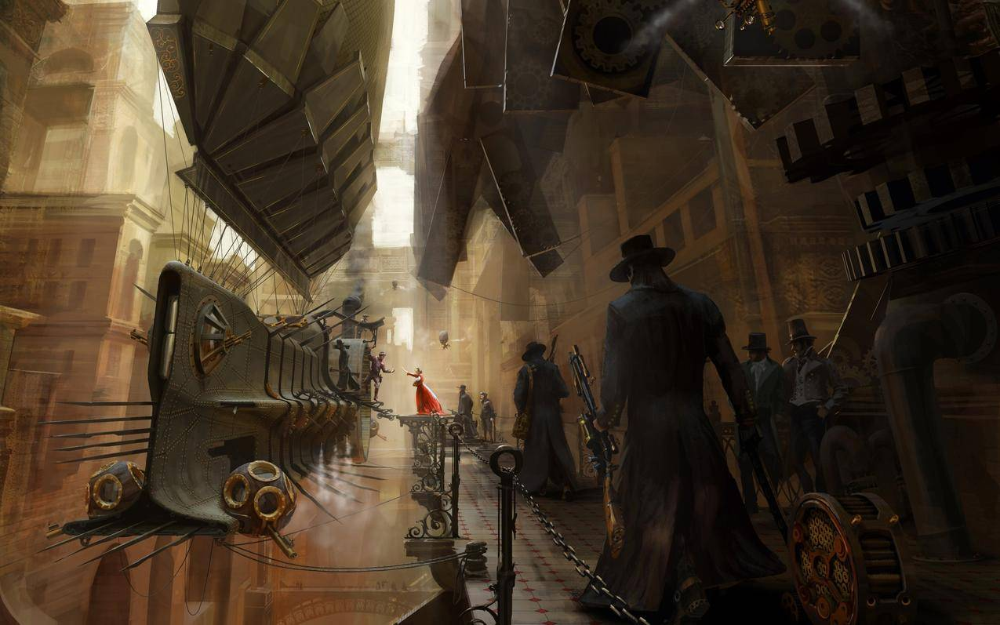

欢迎来到我的世界
生活啊，尽情舞蹈吧

差分机
这是一本或然历史小说，也被誉为“蒸汽朋克”圣经读物！ 19世纪上半叶，蒸汽机的广泛应用，掀开了全球工业革命的狂潮。与此同时，计算机技术的发展也日新月异，差分机（由英国著名数学家查尔斯·巴贝奇设计的一种用蒸汽驱动的计算机）的成功发明， 使得信息技术革命的出现，比现实中提早了一百多年。工业革命、信息技术革命，两股拥有改变世界伟力的技术浪潮合二为一，狂暴地颠覆了整个世界的政治、经济、军事格局。 1855年，大英帝国。一串神秘的差分机程序卡片的突然出现，使得原本平静繁华的伦敦城躁动了起来。代码中所包含的整套赌博程序，让各大势力都垂涎欲滴。 在因大量使用差分机而烟雾弥漫的伦敦城中，工业激进党人、马克思主义分子和反对党卢德派之间剑拔弩张，冲突一触即发。 沦落风尘的女子西比尔、地质学专家马洛里、情报官奥利芬特三人也阴错阳差地卷入了这场腥风血雨之...



蒸汽朋克
蒸汽——“过去”|
朋克——“未来”

蒸汽朋克的世界观是落后与先进共存，魔法与科学共存，精神上追求的乌托邦的理想。
大部分蒸汽朋克作品描写的都是处在维多利亚时代的英国，这是一个号称〈日不落〉的强大帝国。
瓦特改良的蒸汽机使人类社会向前迈了一大步，它的诞生开创了人类的蒸汽时代，使人类社会进入
了以蒸汽机的广泛应用为标志的第一次产业革命。新的能源－石油和电，已经开始被大量开采或是使用。
体形更加庞大的机械开始出现在西方世界的视线中。这一切都使西方文明的生产力得到巨大发展。
生产力大幅攀升，也使得社会形态发生了变革。生产力的发展、产品结构的复杂化、设备的更新、资金的需求
，都要求生产规模必须扩大，设备与资金更加集中。在这样的要求下，自由资本主义开始向垄断
资本主义即帝国主义过渡，垄断组织也就应运而生。技术革命也是技术革新盛况空前的时代。研究
高技术革命的科学天才们将无数的新奇事物带到了这个世界上，而他们自己也受到了无数人的追捧，
发明和商业结合的模式也让他们获利颇丰。这其中最著名的恐怕就是爱迪生－现代电气技术革命和社会革命的奠基人。
科学技术的迅速发展，拓宽了人们的物质世界，也拓宽人们认识的深度和广度。这期间，旧观念的修正和新意识的建立，
从蒸汽机到青霉素细胞，从蒸汽船的明轮到电灯泡的钨丝，种种壮丽的景象都有实现的可能。

蒸汽朋克描绘的世界观，另一大特点就是承前启后。现代科学刚刚走进人们的视野，许多常识问题并没有得到解决。
相对于今天，当时的人多少有点愚昧。不过正是这种落后，使设计师有更多的素材可选择。中世纪的魔法鬼怪，
可以在作品找到非常妥当的位置。而在某些方面，发达的科技甚至可以和今天相抗衡，设计师又可以把今天的某些科
技素材加入到自己的作品当中。总之，这样大大增加了设计师能够使用的素材，也丰富了他和他的作品的想象力。